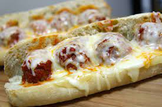

Meatball Parmigiana

Description
You have never tasted anything so delicious and easy to make for lunch or dinner
Ingredients
- 1 lb ground beef
- 1/4 cup bread crumbs
- 3 tbsp parsley
- 1/2 small onion
- 2 cloves garlic
- 1/4 cup parmesan cheese
- pinch of chili powder
- 1 egg
- 3 tbsp milk
- salt and pepper to taste
- 4 Italian hero rolls
- 8 slices provolone
- 1 cup Mozzarella cheese
- melted butter for brushing
Steps
- Combine beef, bread crumbs, onions, parsley, fresh minced garlic, egg, milk, chili powder, parmesan cheese, and a generous sprinkle of salt and pepper. Using your hands mix gently, careful not to over mix.Roll meat mixture into golf sized balls
- Fry the meatballs in vegetable oil over medium high heat, working in batches. Brown them on all sides. Each batch should take about 7 minutes.
- In a separate skillet or the same one warm up some marinara sauce
- Place the browned meatballs in the sauce and let it cook for an hour or until the meatballs are tender and fully cooked through.
- Place hero rolls cut side up on a baking sheet
- Lay a couple of slices of provolone on the hero rolls
- Add a couple of meatballs to the hero roll and ladle some marinara sauce over the meatballs
- Sprinkle some mozzarella and parmesan cheese over the meatballs then place the sandwiches in a preheated oven at 400 degrees f for 5 minutes or until the cheese melts completely